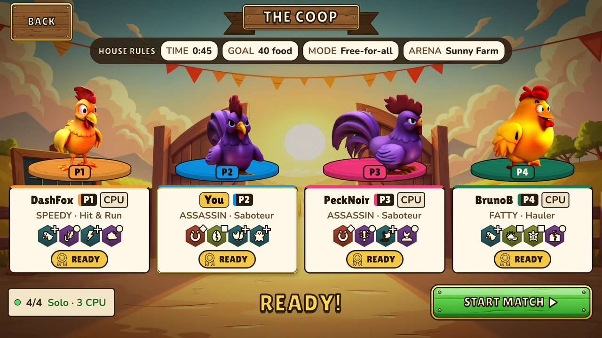
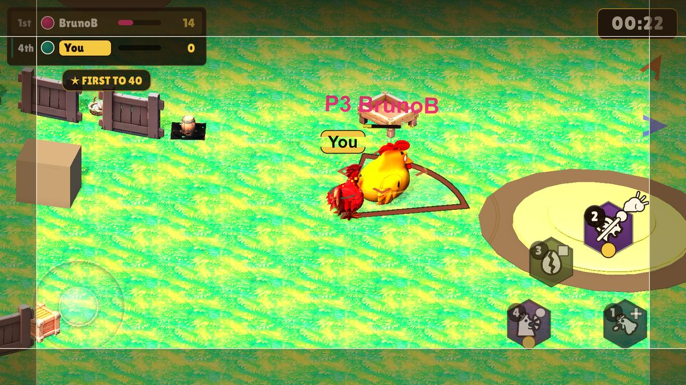

Mechanics
How a match plays, and why the numbers are what they are. Everything here is read from the game design document (v0.4) in the repository.
The loop and the win
Each player picks a class, a passive and abilities, spawns at their base corner and farms the tiered food piles. Food is carried home and deposited at the base, then the trip repeats. On the way, players steal from loaded rivals, control them, and defend their own haul.
The first player to bank 40 food wins at once. If nobody does, the most food banked when the 45 second timer ends wins.
The stored tie-break order is food, then KOs, then the lower corner index. Players are never told a coin flip decided anything. If food is level at the top and KOs do not settle it, the end screen reads "TIED AT THE TOP!" and every tied first-place bird is crowned. If KOs settle it, the banner stays "{name} WINS!" with "Tied 1st · won on KOs".

The last 10 seconds
Once per round, when 10 playable seconds are left (never during the 3-2-1-GO intro), the match authority rolls one of four events. The HUD shows "FINAL 10!" over its name.
| Event | Effect |
|---|---|
| Golden Pile | A 25-food pile appears near the centre. |
| Underdog Surge | The lowest-banked chicken moves ×1.4. |
| Bounty on the Leader | Executing the top-banked chicken pays ×2. |
| Restock | Every pile gets +10, up to its maximum. |
Golden Pile and Restock add food beyond the 80-food budget described below. The design document calls this a deliberate late-match exception.
The Solo Clear Time axiom
The balance rule: a naked chicken (no abilities, no passive), alone on the full map and farming greedily, banks the win target in a fixed time, in a fixed number of base trips. Every class stat is solved against that target instead of tuned by feel. Speedy moves at 12.15, not because it feels right, but because Speedy has to clear in 30 seconds.
| Class | Solo Clear Time | Trips | Strategy |
|---|---|---|---|
| Speedy | 30 s | 4 | Throughput: many small loads, roams wide |
| Fatty | 30 s | 2 | Payload: one huge sweep, barely returns |
| Warrior | 35 s | 3 | The ability class: mid stats, leans on the kit |
| Assassin | 40 s | 4 | Denial: never farms, robs and executes |
Trips are the win target divided by cargo capacity, rounded up. A pure-C# simulator called the Balance Oracle runs the greedy farming policy on the real pile coordinates and checks each class against its target from all four seats. The design band is ±1.5 s. A tighter ±0.5 s guard applies to the shipped asset values.
The map holds 80 food, twice the win target, so two players could in theory max out by farming alone. That is why combat exists: it buys time, and stealing is the only mechanic that turns a won fight directly into food.
The roster and its specializations
| Class | Move | Cargo | Peck cooldown | Fantasy |
|---|---|---|---|---|
| Fatty | 10.125 | 35 | 0.71 s | "Slow, but it all fits in the beak." |
| Speedy | 12.15 | 10 | 0.71 s | "If you can't catch me, you can't rob me." |
| Warrior | 10.125 | 14 | 0.79 s | "The farm is a battlefield." |
| Assassin | 12.15 | 10 | cannot forage | "Blink and your food is gone." |
Speedy and Assassin share move speed and cargo. They differ on one point: the Assassin cannot forage at all, which is the mechanical reason it denies instead of collecting. Speedy never gets terrain traversal, no jump and no blink, because a fast chicken that can also ignore walls would stop being constrained by the map.
Eight specializations
Each class offers two specializations, chosen once at character select. A specialization grants a permanent passive and, for five of the eight, a signature ability that is equipped for you.
| Class | Specialization | Passive | Signature |
|---|---|---|---|
| Warrior | The Brute | Steals 40% more, with 2 extra cargo room to hold it | Scrap |
| Warrior | The Relentless | Every move except Peck recharges 25% faster | Headbutt |
| Speedy | The Agile | Stuns, getting stuck and timed slows end 40% sooner | not yet assigned |
| Speedy | The Anxious | Immune to the pile slow and the collision slow | not yet assigned |
| Fatty | The Hauler | Carries at least a full win's worth | not yet assigned |
| Fatty | The Boulder | Knockback cut by 75%; stuns, getting stuck and timed slows end 35% sooner | Ground Quake |
| Assassin | The Reaper | Banks a bonus if the clock expires with no winner | Death Mark |
| Assassin | The Burglar | Every steal takes 1.6× more | Sneaky Steal |
Three signatures are still unassigned. Those three specializations grant their passive only until ordinary signature abilities are chosen for them.
Steal and control
All chicken-to-chicken interaction is steal or control. There is no basic attack. A steal moves cargo directly from victim to thief; nothing drops on the floor. The amount is capped three ways:
stolen = min(steal value, free space, defender cargo) // never negativeA loaded thief has no free space, so it cannot steal. Theft is a rhythm of steal, bank, return, not a drain. A steal-proof bird (Egg Shell or Turtle Mode) refuses every steal, so the formula never runs against it.
Worked examples:
| Steal value | Thief free space | Defender cargo | Stolen |
|---|---|---|---|
| 6 | 10 | 4 | 4 |
| 6 | 3 | 20 | 3 |
| 6 | 0 | 20 | 0 (a loaded thief) |
The control ladder
| State | Move | Cast abilities | Collect | Source |
|---|---|---|---|---|
| Slowed | reduced | yes | yes | collision, pile, slow abilities |
| Stuck | no | yes | no | trap abilities |
| Stunned | no | no | no | stun abilities (Ambush, Wing Slam) |
Stun is the only state that locks casting. That is exactly why it is the qualifier for the Assassin's execute. Control immunity (Immovable, Egg Shell) stops the whole ladder; steal-proofing is separate and only stops cargo being taken.
Death Mark: one button, two presses
The Assassin's execute is the only hard removal in the game. Only the Reaper specialization has it, locked into the first of the four ability slots.
| Stage | Condition | Counterplay |
|---|---|---|
| Mark | First press soft-locks the nearest isolated rival (nobody within 8 m), in facing. The target can see the mark. | Stay near others. |
| Arm | 2.0 seconds pass with the mark alive. | Break isolation or leave range and the mark fizzles. |
| Qualify | The marked target enters a stun, from any source. The button relabels to KILL. | Don't get stunned; hold a defence. |
| Kill | Press again while the target is stunned and the Assassin is not. | A third player can stun the Assassin to deny the kill. |
On success the victim's whole cargo moves to the Assassin as a bounty bag that ignores the capacity limit. The victim is removed for about 2 seconds, then respawns empty. A steal-proof victim keeps its load. If the execute fails, Death Mark takes a reduced cooldown so the Assassin can re-mark quickly.
The 29 abilities
Egg Shell is the one ability every class can equip. Peck is pre-equipped for the three forager classes and never picked by hand; the Assassin cannot forage. Every other ability belongs to exactly one class. Each player has four active slots. Cooldowns are the shipped values, before passives. Effect text is shortened from the design document.
| Ability | Cooldown | Effect |
|---|---|---|
| Peck Shared | 0.8 s | Take a beakful from the pile you stand on. Forced for every forager. |
| Egg Shell Shared | 8 s | Hide in an egg for 2 s. You cannot move, but nobody can push you, stop you or steal your food. |
| Cluck Shock Warrior | 7 s | A shockwave shoves every rival within 4.5 m away. |
| Dive Bomb Warrior | 6 s | A diving lunge that robs 8 food from rivals on contact. |
| Headbutt Warrior | 4 s | Shoves rivals up to 3.6 m ahead and staggers them for 0.35 s. Relentless signature. |
| Ruffle Warrior | 5 s | 1.5× speed for 2.5 s, on the ground only. |
| Scrap Warrior | 5 s | Grabs 3 food off the nearest carrier within 3.8 m. Brute signature. |
| Wing Slam Warrior | 8 s | Slams the ground ahead, stunning rivals within 4.5 m for 1.3 s. |
| Dust Kick Speedy | 6 s | Kicks dust backwards. Chasers within 4.5 m slow to 55% for 2.5 s. |
| Feather Aura Speedy | 7 s | Slows every chicken within 5.4 m to 55% speed for 3 s. |
| Feather Trap Speedy | 7 s | A feather cloud thrown ahead lasts 5 s. Chickens in it slow to 45% speed. |
| Feint Speedy | 5 s | A hard sidestep delivered as a knockback impulse. Walls still stop it. |
| Quick Drop Speedy | 12 s | Banks food 4× faster for 2 s. |
| Speed Burst Speedy | 6 s | A 1.5 s sprint at 1.5× movement speed. |
| Belly Flop Fatty | 10 s | Launches forward and lands hard, stunning rivals within 4 m for 1.4 s. |
| Ground Quake Fatty | 9 s | A stomp that pins everyone within 4.5 m in place for 1.8 s. Boulder signature. |
| Immovable Fatty | 12 s | Plant yourself for 3 s. You cannot be stunned, slowed, stuck or shoved. |
| Roll & Push Fatty | 3 s | Rolls forward at 2× speed for 0.8 s, shoving chickens out of the path. |
| Sticky Egg Fatty | 7 s | Drops a sticky egg. The first chicken to step on it is stuck for 2 s. |
| Spine Coat Fatty | 8 s | For 2 s, a rival who bumps into you loses 4 food to you and is knocked away. |
| Turtle Mode Fatty | 10 s | Pull into your shell for 3 s. You walk at half speed, but nobody can steal your food. |
| Ambush Assassin | 10 s | Stuns rivals within 3.6 m for 1 s. Sets up the execute. |
| Doppelganger Assassin | 11 s | A decoy copy beside you for 4 s. |
| Invisibility Assassin | 8 s | Fades you to a ghostly outline for 4 s. Using a move breaks it. |
| Death Mark Assassin | 5 s | The execute. Marks a lone rival within 8 m; stun them, then press again to take everything they carry. Reaper only. |
| Shadowstep Assassin | 6 s | Dashes forward at 3× speed for 0.4 s, straight over walls. |
| Smoke Roost Assassin | 11 s | A cloud at your feet (4 m, 5.5 s). You fade; rivals inside slow to 55% speed. |
| Snatch Assassin | 3 s | Robs 5 food from every rival within 4.3 m ahead and shoves them back. |
| Sneaky Steal Assassin | 5 s | Yanks 6 food from the nearest carrier within 5.4 m. Burglar signature. |
Cooldown tiers
| Tier | Range | Abilities |
|---|---|---|
| Quick | 3 to 5 s | Roll & Push, Snatch, Headbutt, Ruffle, Scrap, Feint, Sneaky Steal, Death Mark |
| Standard | 6 to 9 s | Dust Kick, Speed Burst, Shadowstep, Dive Bomb, Sticky Egg, Cluck Shock, Feather Aura, Feather Trap, Spine Coat, Wing Slam, Invisibility, Egg Shell, Ground Quake |
| Heavy | 10 to 12 s | Turtle Mode, Belly Flop, Ambush, Smoke Roost, Doppelganger, Immovable, Quick Drop |
A move earns a Heavy cooldown only if it gives immunity (control immunity or steal-proofing), a hard area stun of at least 1.4 s, or an economy burst. Ambush, Smoke Roost and Doppelganger sit in Heavy without meeting that rule, and the design document leaves them there until a human four-player session. Peck is foraging cadence set by the Solo Clear Time axiom, not a tiered move.
Hold to aim, release to use
An ability always fires on release, never on press. The moment you press, your own screen shows the move's true area on the ground and marks every chicken inside it. What is marked is exactly what gets hit.
Past about 125 ms the hold becomes a commitment. Rivals see a wind-up glow at your feet, though not your area, and the stick rotates your aim instead of moving you.
Having no target is not illegal. A move that needs a rival and finds none shows a cream dashed ring. Release it anyway and it fizzles: no effect, no cooldown, and the slot re-arms after 0.4 s so it cannot be spammed. A held move can be cancelled without firing or costing its cooldown: drag to the screen edge on touch, Esc or right mouse button on keyboard and mouse, B on a gamepad.

Piles, walls and jumps
Tiered piles
| Tier | Piles | Food each | Total | Role |
|---|---|---|---|---|
| T1 doorstep | 4 | 5 | 20 | Safe income near your base |
| T2 contested | 4 | 10 | 40 | Equidistant from two bases |
| T3 centre | 1 | 20 | 20 | The prize |
That is 80 food in total, twice the win target. Piles do not respawn, so banked food leaves circulation and the pot visibly shrinks as the match goes on.
Walls
Eight radial walls divide the arena into eight 45 degree sectors, alternating between base sectors and neutral sectors. Each wall has exactly one opening, at one end. The pattern repeats four times, so every player's sector is identical. From your base, the left route is the safe lap: out to the rim, along the edge, past a contested pile. The right route is the risky lap: in past the centre pile.
Jumps
Every jump is a teleport, and there are no obstacle height classes. A jump clears an obstacle only if its length beats the obstacle's span plus 0.8 m of body clearance. A jump that falls short stops flush against the near face, and the cooldown is still spent.
Jumps come in a ladder of lengths. The shortest closes the gap over a wall, a longer one vaults a pile, and only the longest crosses a full centre pile. The tier lengths are still being tuned, so this page does not list them.
The centre pile shrinks as it empties, and since span is the only thing gating a jump, the map opens up in stages. A full pile is a fortress that only the longest jump crosses. As it shrinks, shorter jumps can cross it, and a nearly empty pile blocks nothing. The prize everyone is fighting over is also the wall protecting it, so the arena dissolves as the match converges.
An open problem
The arena is too big for four players in 45 seconds. In play, four chickens rarely run into each other, so a whole match can pass in parallel: everyone farms, everyone banks. The control and steal systems that the v0.4 redesign exists to serve go unexercised. The design document marks this as known, accepted for now, and something that must be solved before the map is called done.
The levers it lists, none chosen yet:
- Shrink the arena. Cheapest, but every spatial constant derives from its size, and shrinking alone shortens Solo Clear Time unless speeds come down too.
- Pull the objectives inward, so routes overlap sooner.
- Raise the player count. The arena may simply be sized for more players, but that changes the free-for-all maths and the win target.
- Add interior geometry that funnels traffic through shared corridors.
The design document's reason for waiting: it is not yet known whether the encounter rate is wrong or the readability of encounters is, and guessing costs a re-solve of every derived constant. This is the first question a human playtest has to answer.